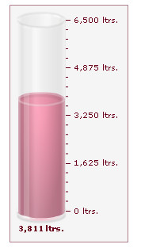
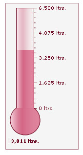

| Changing chart type |
|
In our previous example, in Creating your first chart page, we had created an angular gauge. Now, to explain the process of changing the chart type using the same data, we will first create a cylinder gauge and then convert it to a thermometer gauge. Please note that you can change the chart type without having to change the data, only if the new chart type is compatible with the original data.
If the chart data is not compatible with the new chart type, you'll get a "No data to display" message on the chart. In this example, the cylinder gauge represents the amount of petrol left in a fuel tanker, which has the capacity to hold 6500 liters of petrol. The tanker presently contains 3811 liters of petrol. The completed gauge looks as shown below:  You can create an XML file as Data.xml and an HTML file as fuel_tanker.html. Save both the files in the MyFirstChart folder. Furthermore, copy Cylinder.swf from the Download Pack > Charts folder to the Charts folder in the MyFirstChart folder. |
| The XML data for the cylinder gauge is provided below: |
<chart palette='5' lowerLimit='0' upperLimit='6500' numberSuffix='ltrs' bgColor='DCDCDC' gaugeFillAlpha='100' showGaugeBorder='1' gaugeBorderThickness='1'> <value>3811</value> </chart> {
|
The HTML container for the chart is provided below: |
<html>
<head>
<title>My First chart using FusionWidgets - change chart type</title>
<script type="text/javascript" src="Charts/FusionCharts.js"></script>
</head>
<body>
<div id="chartContainer">FusionWidgets will load here!</div>
<script type="text/javascript"><!--
var myChart = new FusionCharts( "Charts/Cylinder.swf", "myChartId", "150", "300", "0", "0" );
myChart.setXMLUrl("Data.xml");
myChart.render("chartContainer");
// -->
</script>
</body>
</html>
|
| Once completed, the chart will look like the image shown below.
Code examples discussed in this section are present in Download Package > Code > MyFirstChart folder. The chart SWF files are present in Download Package > Charts folder. For this example, create a copy of fuel_tanker.html and save it as fuel_tanker_thermometer.html in the same folder. Finally, modify the HTML code to reflect the following change: <html>
<head>
<title>My First chart using FusionWidgets - change chart type</title>
<script type="text/javascript" src="Charts/FusionCharts.js"></script>
</head>
<body>
<div id="chartContainer">FusionWidgets will load here!</div>
<script type="text/javascript"><!--
var myChart = new FusionCharts( "Charts/Thermometer.swf", "myChartId", "150", "300", "0", "0" );
myChart.setXMLUrl("Data.xml");
myChart.render("chartContainer");
// -->
</script>
</body>
</html> |
In the above code, we've changed the path of the SWF file, which was earlier pointing to Cylinder.swf, but is now pointing to Thermometer.swf. You need to copy Thermometer.swf file from Charts folder of the Download Pack to the Charts folder inside your MyFirstChart folder. If you now open the HTML file in a browser, you'll see a thermometer gauge similar to this: |
 |
| See it live! |
Existing users: You might be wondering what happened to the setDataURL() function that you have already been using in your application. Yes - although deprecated, it will continue to work without any problem. |